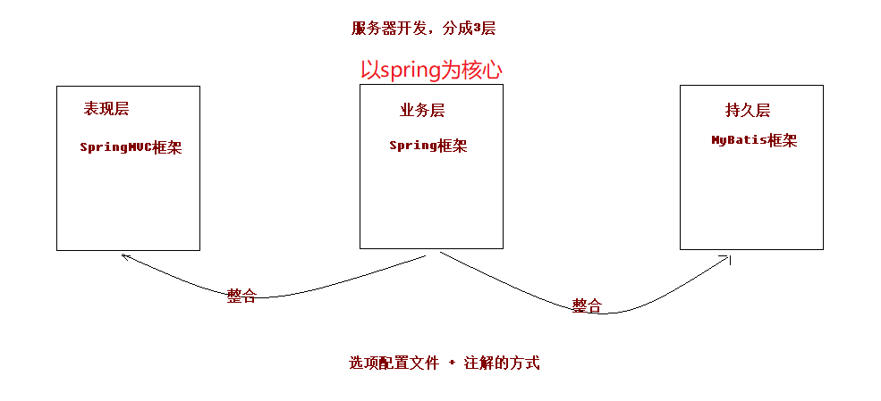

SSM框架说明
开发流程

三个部分大致功能
springmvc
通过一个简单的Java类来作为请求处理的控制器
spring
IOC（Inverse of Control反转控制）：
解决传统方式（使用new关键字创建对象）带来的编译器依赖，通过扫描XML或注解来反射创建对象，并将对象交给spring容器（工厂类：保证所有类对象都是单例）来管理
使用方式：在类上添加注解或编写XML
AOP（Aspect oriented Programming面向切面编程）：
解决传统方式在事务控制等业务逻辑上代码重复问题，采用动态代理技术进行方法增强
使用方式：调用持久层方法不变，只需要增加调用前后的逻辑处理
mybatis
解决传统方式进行持久层操作时代码重复问题，采用动态代理技术进行方法增强
使用方式：只需要通过XML或注解提供sql语句和接口
SSM环境搭建
导入POM坐标
<properties>
<project.build.sourceEncoding>UTF-8</project.build.sourceEncoding>
<maven.compiler.source>1.8</maven.compiler.source>
<maven.compiler.target>1.8</maven.compiler.target>
<spring.version>5.1.6.RELEASE</spring.version>
<mysql.version>5.1.6</mysql.version>
<log4j.version>1.2.12</log4j.version>
<slf4j.version>1.6.6</slf4j.version>
<mybatis.version>3.4.5</mybatis.version>
</properties>
<dependencies>
<!-- spring-->
<!-- 注解配置-->
<dependency>
<groupId>org.springframework</groupId>
<artifactId>spring-context</artifactId>
<version>${spring.version}</version>
</dependency>
<!-- spring AOP-->
<dependency>
<groupId>org.springframework</groupId>
<artifactId>spring-aop</artifactId>
<version>${spring.version}</version>
</dependency>
<dependency>
<groupId>org.aspectj</groupId>
<artifactId>aspectjweaver</artifactId>
<version>1.9.3</version>
</dependency>
<!-- spring事务管理-->
<dependency>
<groupId>org.springframework</groupId>
<artifactId>spring-tx</artifactId>
<version>${spring.version}</version>
</dependency>
<!-- jdbc Template-->
<dependency>
<groupId>org.springframework</groupId>
<artifactId>spring-jdbc</artifactId>
<version>${spring.version}</version>
</dependency>
<!-- springmvc-->
<dependency>
<groupId>org.springframework</groupId>
<artifactId>spring-web</artifactId>
<version>${spring.version}</version>
</dependency>
<dependency>
<groupId>org.springframework</groupId>
<artifactId>spring-webmvc</artifactId>
<version>${spring.version}</version>
</dependency>
<dependency>
<groupId>javax.servlet</groupId>
<artifactId>servlet-api</artifactId>
<version>2.5</version>
<scope>provided</scope>
</dependency>
<dependency>
<groupId>javax.servlet.jsp</groupId>
<artifactId>jsp-api</artifactId>
<version>2.2</version>
<scope>provided</scope>
</dependency>
<!-- java server pages standarded tag libs JSP标准标签库-->
<dependency>
<groupId>jstl</groupId>
<artifactId>jstl</artifactId>
<version>1.2</version>
</dependency>
<!-- 单元测试-->
<dependency>
<groupId>junit</groupId>
<artifactId>junit</artifactId>
<version>4.11</version>
<!-- 源代码阶段-->
<scope>compile</scope>
</dependency>
<dependency>
<groupId>org.springframework</groupId>
<artifactId>spring-test</artifactId>
<version>${spring.version}</version>
</dependency>
<!-- mybatis-->
<dependency>
<groupId>org.mybatis</groupId>
<artifactId>mybatis</artifactId>
<version>${mybatis.version}</version>
</dependency>
<!-- mysql数据库底层驱动-->
<dependency>
<groupId>mysql</groupId>
<artifactId>mysql-connector-java</artifactId>
<version>${mysql.version}</version>
</dependency>
<!-- mybatis整合spring-->
<dependency>
<groupId>org.mybatis</groupId>
<artifactId>mybatis-spring</artifactId>
<version>1.3.2</version>
</dependency>
<!-- 数据源-->
<dependency>
<groupId>c3p0</groupId>
<artifactId>c3p0</artifactId>
<version>0.9.1.2</version>
<type>jar</type>
<scope>compile</scope>
</dependency>
<!-- 日志-->
<dependency>
<groupId>log4j</groupId>
<artifactId>log4j</artifactId>
<version>${log4j.version}</version>
</dependency>
<dependency>
<groupId>org.slf4j</groupId>
<artifactId>slf4j-api</artifactId>
<version>${slf4j.version}</version>
</dependency>
<dependency>
<groupId>org.slf4j</groupId>
<artifactId>slf4j-log4j12</artifactId>
<version>${slf4j.version}</version>
</dependency>
</dependencies>
Spring整合SpringMVC
整合原理

在web.xml中添加监听器，当tomcat启动时加载Spring配置
<!DOCTYPE web-app PUBLIC
"-//Sun Microsystems, Inc.//DTD Web Application 2.3//EN"
"http://java.sun.com/dtd/web-app_2_3.dtd" >
<web-app>
<display-name>Archetype Created Web Application</display-name>
<!-- 手动指定spring配置文件路径-->
<context-param>
<param-name>contextConfigLocation</param-name>
<param-value>classpath:applicationContext.xml</param-value>
</context-param>
<!-- 中文乱码过滤器-->
<filter>
<filter-name>characterEncodingFiletr</filter-name>
<filter-class>org.springframework.web.filter.CharacterEncodingFilter</filter-class>
<init-param>
<param-name>encoding</param-name>
<param-value>UTF-8</param-value>
</init-param>
</filter>
<filter-mapping>
<filter-name>characterEncodingFiletr</filter-name>
<url-pattern>/*</url-pattern>
</filter-mapping>
<!-- 配置Spring的监听器，默认加载WEB-INF目录下的applicationContext.xml文件-->
<listener>
<listener-class>org.springframework.web.context.ContextLoaderListener</listener-class>
</listener>
<!-- 前端控制器-->
<servlet>
<servlet-name>dispatchServlet</servlet-name>
<servlet-class>org.springframework.web.servlet.DispatcherServlet</servlet-class>
<init-param>
<param-name>contextConfigLocation</param-name>
<param-value>classpath:springmvc.xml</param-value>
</init-param>
<load-on-startup>1</load-on-startup>
</servlet>
<servlet-mapping>
<servlet-name>dispatchServlet</servlet-name>
<url-pattern>/</url-pattern>
</servlet-mapping>
</web-app>
Springmvc配置：限制注解扫描范围
<?xml version="1.0" encoding="UTF-8"?>
<beans xmlns="http://www.springframework.org/schema/beans"
xmlns:xsi="http://www.w3.org/2001/XMLSchema-instance"
xmlns:context="http://www.springframework.org/schema/context"
xmlns:mvc="http://www.springframework.org/schema/mvc"
xsi:schemaLocation=
"http://www.springframework.org/schema/beans
http://www.springframework.org/schema/beans/spring-beans.xsd
http://www.springframework.org/schema/context
http://www.springframework.org/schema/context/spring-context.xsd
http://www.springframework.org/schema/mvc
http://www.springframework.org/schema/mvc/spring-mvc.xsd">
<!-- 注解扫描-->
<context:component-scan base-package="com.itcast">
<!-- 仅扫描控制器-->
<context:include-filter type="annotation" expression="org.springframework.stereotype.Controller"/>
</context:component-scan>
<!-- 视图解析器-->
<bean id="viewResolver" class="org.springframework.web.servlet.view.InternalResourceViewResolver">
<property name="prefix" value="/WEB-INF/pages/"/>
<property name="suffix" value=".jsp"/>
</bean>
<!-- 过滤静态资源-->
<mvc:resources mapping="/css/**" location="/css/"/>
<mvc:resources mapping="/js/**" location="/js/"/>
<mvc:resources mapping="/images/**" location="/images"/>
<!-- 开启springMVC注解支持-->
<mvc:annotation-driven/>
</beans>
Spring整合Mybatis
在Spring的配置中添加mybatis的配置信息，不再需要原先Mybatis的配置文件
<?xml version="1.0" encoding="UTF-8"?>
<beans xmlns="http://www.springframework.org/schema/beans"
xmlns:xsi="http://www.w3.org/2001/XMLSchema-instance"
xmlns:context="http://www.springframework.org/schema/context"
xmlns:aop="http://www.springframework.org/schema/aop"
xmlns:tx="http://www.springframework.org/schema/tx"
xsi:schemaLocation="http://www.springframework.org/schema/beans
http://www.springframework.org/schema/beans/spring-beans.xsd
http://www.springframework.org/schema/context
http://www.springframework.org/schema/context/spring-context.xsd
http://www.springframework.org/schema/aop
http://www.springframework.org/schema/aop/spring-aop.xsd
http://www.springframework.org/schema/tx
http://www.springframework.org/schema/tx/spring-tx.xsd">
<!-- 扫描service和dao，Controller不需要Spring框架去处理-->
<context:component-scan base-package="com.itcast">
<!-- 配置要忽略的注解-->
<context:exclude-filter type="annotation" expression="org.springframework.stereotype.Controller"/>
</context:component-scan>
<!-- Spring声明式事务管理-->
<!-- 配置事务管理器-->
<bean id="transactionManager" class="org.springframework.jdbc.datasource.DataSourceTransactionManager">
<!-- 配置添加事务控制的数据源-->
<property name="dataSource" ref="dataSource"/>
</bean>
<!-- 配置事务通知-->
<tx:advice id="txAdvice" transaction-manager="transactionManager">
<!-- 事务通知的属性
name：切入点-->
<tx:attributes>
<tx:method name="find*" propagation="SUPPORTS" read-only="true"/>
<tx:method name="*"/>
</tx:attributes>
</tx:advice>
<!-- 配置AOP增强-->
<aop:config>
<!-- 配置切入点表达式-->
<aop:pointcut id="pt1" expression="execution(* com.itcast.service.impl.*.*(..))"/>
<!-- 建立切入点表达式和事务的关系-->
<aop:advisor advice-ref="txAdvice" pointcut-ref="pt1"/>
</aop:config>
<!-- Spring整合MyBatis框架-->
<!-- 配置数据源：替代SqlMapConfig.xml中的数据源配置-->
<bean id="dataSource" class="com.mchange.v2.c3p0.ComboPooledDataSource">
<!-- 连接数据库的信息-->
<property name="driverClass" value="com.mysql.jdbc.Driver"/>
<property name="jdbcUrl" value="jdbc:mysql://localhost:3306/db2"/>
<property name="user" value="root"/>
<property name="password" value="1234"/>
</bean>
<!-- 配置AccountDao接口所在的包：替代SqlMapConfig.xml中的mapper标签-->
<bean id="mapperScanner" class="org.mybatis.spring.mapper.MapperScannerConfigurer">
<property name="basePackage" value="com.itcast.dao"/>
</bean>
<!-- 配置SqlSessionFactory：生产Session对象-->
<bean id="sqlSessionFactory" class="org.mybatis.spring.SqlSessionFactoryBean">
<property name="dataSource" ref="dataSource"/>
</bean>
</beans>